Восстановление данных с жесткого диска (HDD)
 Лаборатория Storelab специализируется на профессиональных услугах по восстановлению жестких дисков с любыми неисправностями. Поможем вернуть информацию, если жесткий диск не определяется компьютером, не запускается, не инициализирован, щёлкает или издает посторонние звуки. Официальный партнер по восстановлению данных Seagate и Western Digital в России.
Лаборатория Storelab специализируется на профессиональных услугах по восстановлению жестких дисков с любыми неисправностями. Поможем вернуть информацию, если жесткий диск не определяется компьютером, не запускается, не инициализирован, щёлкает или издает посторонние звуки. Официальный партнер по восстановлению данных Seagate и Western Digital в России.
Восстановление жесткого диска с гарантией результата!
Вас обслуживают инженеры, которые знают и любят свою работу. Сотрудники Storelab - эксперты в области восстановления дисков: Seagate, Western Digital, Samsung, Hitachi, Toshiba, Transcend, Touro, Adata. Успешно работаем с запилами магнитных пластин, гелиевыми дисками и другими сложными случаями восстановления данных, которые другие компании считают невыполнимыми. Поддерживаем все типы дисков IDE, SATA, SAS, SCSI от компьютеров до сетевых хранилищ и RAID массивов.
Минимальные сроки выполнения работ!
Большое количество жестких дисков в наличии позволяет нам не тратить время на поиск и заказ запчастей. Сразу приступаем к восстановлению данных без ожиданий и очередей. Вычитывание дисков проводится максимально быстро на программно-аппаратных комплексах нового поколения PC-3000 Express. Это позволяет безопасно восстановить данные с жесткого диска компьютера или ноутбука. В своей работе мы используем только неразрушающие процессы чтения.
Уникальное оборудование для восстановления жестких дисков
Единственная лаборатория в Москве, оснащенная по последнему слову техники, где есть полный комплекс оборудования для работы на жестких дисках SCSI, SAS, Fibre Channel. Включая последнюю версию комплекса PC3000 Express SAS с DATA Extractor и RAID Edition. А также готовые решения для всех типов файловых систем: FAT32, NTFS, HFS, HFS+, HFSX, EXT, UFS. Восстановление данных со вскрытием гермоблока, выполняется исключительно в чистой комнате. Что гарантирует успешный результат при замене механики диска.
Восстановление данных в самой мощной лаборатории Москвы
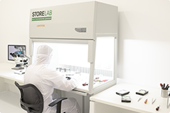
Чистая комната класса 100

Бесплатная диагностика

Восстановление в день обращения
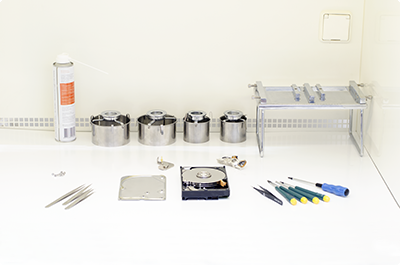
Современное оборудование

Лаборатория №1 в Москве

Восстановление RAID массивов

Все диски доноры в наличии

Сразу приступаем к работе
Какие бывают неисправности жестких дисков
Нечитаемые сектора жесткого диска Сбойные сектора жесткого диска или кластеры, нормальная работа с которыми не гарантируется или невозможна в принципе. Признаки: сильно падает скорость чтения, компьютер выдает ошибки, синий экран, зависает. Магнитные головки, попадая на сбойный сектор, не могут корректно произвести запись / чтение на этот участок. Данная проблема свойственна практически всем моделям винчестеров в той или иной степени. Для восстановления дисков c такими повреждениями используется программно-аппаратный комплекс Data Extractor.
Неисправность платы электроники Выгорание или выход из строя электронных компонентов платы, диодов, микросхем. Двигатель не запускается, звуков не издает, присутствует запах гари. Часто бывает вызвано электрическим пробоем или неисправностью блока питания. Встречается при ошибочном подключении полярности питания. Для восстановления данных винчестера, производится замена платы электроники с аналогичного диска - донора. Затем, для того чтобы диск вышел в готовность, требуется замена микропрограммы. Производится перепайка или перепрошивка микросхемы ПЗУ контроллера.
Неисправность магнитных блока головок Диск издает щелчки или треск. Некоторые модели, спустя некоторое время, могут остановить двигатель. Щелчки указывают на то, что диск не в состоянии считать серворазметку. Накопитель не выходит в рабочий режим. Одна из самых технически сложных работ. Требуется замена блока магнитных головок. В зависимости от состояния поверхности пластин на такие работы требуется от одного до нескольких донорских дисков. В чистой комнате, специальным съемником производится перестановка блока магнитных головок. Вычитываем информацию на комплексе PC-3000.
Выход из строя коммутатора Коммутатор располагается на блоке магнитных головок. Используется для усиления сигнала от головок к контроллеру. Выход из строя коммутатора является следствием поломки или пробоя платы электроники. На жестком диске конструктивно выполнен таким образом, что отдельно замена или перепайка коммутатора-предусилителя невозможна. Восстановление жесткого диска до рабочего состояния выполняется путем замены всего блока магнитных головок с идентичного донорского жесткого диска.
Клин двигателя жесткого диска Заклинивание ротора часто встречается на Seagate и Toshiba с тремя и более пластинами. Основная причина - сильный удар в рабочем состоянии. Возможны два варианта: ось вала двигателя клинит торцом о стопорную шайбу подшипника или ось вала клинит по поверхности втулки подшипника. Вал двигателя в любом случае не раскручивается. Иногда издаёт тихие гудящие звуки и нагревается. Процесс восстановления довольно трудоемкий. Возможны два варианта: высверливание шайбы и расклинивание подшипника шпинделя. В новых моделях возможен только более сложный процесс перестановки пластин в гермоблок донора.
Залипание магнитных головок Залипание возникает при ударах и падениях диска, иногда при отключении питания. Магнитные головки не успевают переместиться в парковочную область и прилипают к поверхности. Часто встречается на компактных моделях - винчестеры 1.8", 2.5" дюйма. Для восстановления требуются специальные съёмники и ряд инструментов. Для того, чтобы не поцарапать поверхность пластин. Головки аккуратно выводятся съемниками в область парковки. В случаях их повреждения, производится подбор донорского диска и замена БМГ в чистой комнате. Затем на стенде снимается посекторный образ диска.
Как производится восстановление данных c жесткого диска
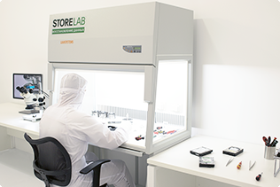
Чистая комната класса 100

Вскрытие в чистой комнате
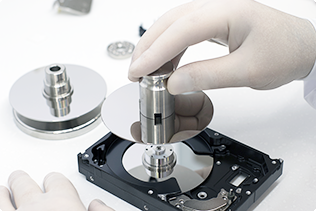
Устройство для снятия пластин
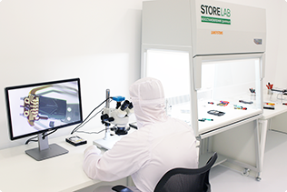
Электронный микроскоп

Съемники магнитных головок
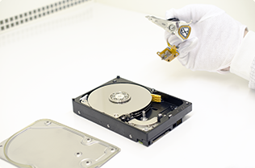
Замена магнитных головок
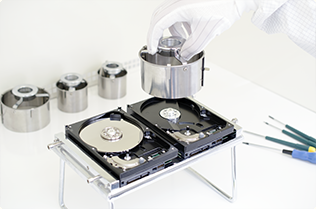
Пересадка пакета пластин
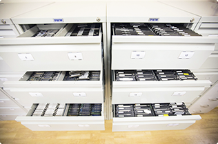
Все диски доноры в наличии
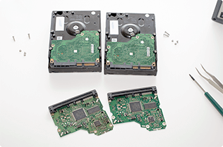
Замена платы электроники
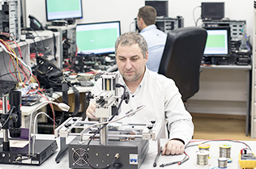
Перепайка элементов платы
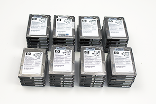
Восстановление RAID массивов

Сборка сложных RAID систем
Лучшие специалисты по восстановлению данных в Москве

Александр Гуревич
Инженер
опыт работы 14 лет
Александр Гуревич
Инженер
опыт работы 14 лет
Александр Гуревич
Инженер
опыт работы 14 лет
Александр Гуревич
Инженер
опыт работы 14 лет
Александр Гуревич
Инженер
опыт работы 14 лет
Александр Гуревич
Инженер
опыт работы 14 лет
Александр Гуревич
Инженер
опыт работы 14 лет
Александр Гуревич
Инженер
опыт работы 14 лет
Сертифицированные эксперты
Постоянное обучение и повышение квалификации инженеров, позволяет нам выполнять самые сложные и нестандартные случаи восстановления данных. Многие компании только на словах заявляют о своем профессионализме. Мы можем подтвердить это многочисленными дипломами и сертификатами.
Storelab занимается постоянным развитием команды с 2009 года. Все наши специалисты регулярно проходят обучение в компании АCELab, которая является лидером в области производства программно-аппаратных комплексов PC-3000 для восстановления данных.
Работаем со всеми производителями жестких дисков
Seagate Barracuda ST4000VX007 (4 TB) Жесткий диск упал в рабочем состоянии. Щелкает и не определяется компьютером. Диагностика выявила неисправность блока магнитных головок. Две головки были загнуты и повреждены при ударе. Произведена замена блока магнитных головок с донорского накопителя в чистой комнате. Затем жесткий диск вычитан на комплексе PC-3000.
Western Digital WD20EZRX (2 TB). В компьютере сгорел блок питания. Винчестер перестал определяться. Имелись выгоревшие электрические элементы на плате. В ходе работ с донорского диска была произведена замена родной платы электроники. Произведена перепайка микросхемы ПЗУ. После чего вычитана полная копия диска.

Toshiba DT01ACA050 (500GB). Диск из компьютера постоянно выдавал ошибки чтения, выпадал "синий экран". Диагностика показала большое количество нечитаемых секторов. Магнитные головки были живы. Было принято решение вычитывать диск на комплексе PC-3000 родными головками. Поскольку нужной информации было не более 100 GB, комплекс быстро перечитал все bad блоки.
HGST HTS721010A9E630 (1 TB). Диск из ноутбука. Перестал определяться, издает тихий писк. Диагностика выявила, часто встречающуюся проблему на этих дисках, залипание магнитных головок. Съёмником головки были аккуратно выведены на парковку. Поверхность была в хорошем состоянии. А вот блок головок попал под замену.
Samsung HM641JI (640GB) из ноутбука, довольно частый гость в нашей лаборатории. Обычно после падения сразу случается залипание магнитных головок. В данном случае головки оторвались от поверхности, завернулись и начали царапать поверхность пластин. Сразу же была произведена замена блока магнитных головок. Но диск начинал читать, доходил до царапины и вновь головки выходили из строя. Были произведены две замены БМГ, вычитан практически весь объем.
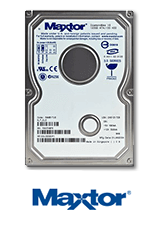
Maxtor Diamong Max Plus 9 (60Gb) Перестал определяться в операционной системе. Но раскручивался и исправно определялся в BIOS. Диагностика показала деградацию блока магнитных головок. Блок головок был успешно заменен в чистой комнате. После чего на комплексе PC-3000 был снята копия образ данных.
Основатели отрасли
Data Recovery
Официальный партнер
Seagate и Western Digital
Опыт работы
25 лет
Сертификация качества
ISO 9001:2015
Истории успеха восстановления данных
Мы и наши работы на YouTube
Нам доверяют восстановление данных

«Альфа-Банк» выражает признательность и благодарность сотрудникам лаборатории Сторлаб за отличные результаты, достигнутые в процессе сотрудничества. Все работы были выполнены в строго оговоренные сроки с надлежащим качеством.

«Альфа-Банк» выражает признательность и благодарность сотрудникам лаборатории Сторлаб за отличные результаты, достигнутые в процессе сотрудничества. Все работы были выполнены в строго оговоренные сроки с надлежащим качеством.

«Альфа-Банк» выражает признательность и благодарность сотрудникам лаборатории Сторлаб за отличные результаты, достигнутые в процессе сотрудничества. Все работы были выполнены в строго оговоренные сроки с надлежащим качеством.

«Альфа-Банк» выражает признательность и благодарность сотрудникам лаборатории Сторлаб за отличные результаты, достигнутые в процессе сотрудничества. Все работы были выполнены в строго оговоренные сроки с надлежащим качеством.

«Альфа-Банк» выражает признательность и благодарность сотрудникам лаборатории Сторлаб за отличные результаты, достигнутые в процессе сотрудничества. Все работы были выполнены в строго оговоренные сроки с надлежащим качеством.

«Альфа-Банк» выражает признательность и благодарность сотрудникам лаборатории Сторлаб за отличные результаты, достигнутые в процессе сотрудничества. Все работы были выполнены в строго оговоренные сроки с надлежащим качеством.
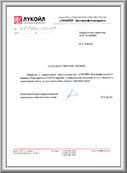
«Альфа-Банк» выражает признательность и благодарность сотрудникам лаборатории Сторлаб за отличные результаты, достигнутые в процессе сотрудничества. Все работы были выполнены в строго оговоренные сроки с надлежащим качеством.

«Альфа-Банк» выражает признательность и благодарность сотрудникам лаборатории Сторлаб за отличные результаты, достигнутые в процессе сотрудничества. Все работы были выполнены в строго оговоренные сроки с надлежащим качеством.
Бесплатная доставка в лабораторию
Если у вас нет возможности приехать к нам - Закажите бесплатную доставку курьером по Москве и Московской области и получите скидку 15% на восстановление данных. Ежедневно можно заказать доставку нашим штатным курьером. Который привезет жесткий диск к нам в сервисный центр на диагностику и восстановление данных. Возможна и обратная доставка из лаборатории до указанного вами адреса. Перевозка осуществляется в специальной сумке, предназначенной для безопасной транспортировки дисков. Курьер может приехать к вам домой или в офис в удобное время
Что делать, если жесткий диск вышел из строя
Если жесткий диск не определяется системой, издает щелчки или другие посторонние звуки — это указывает на повреждения механики винчестера. В таких случаях мы рекомендуем отключить питание от диска. Не подключать в дальнейшем и не вскрывать накопитель. Это может привести к повреждениям поверхности магнитных пластин. Восстановления данных в таких случаях возможно только в лабораторных условиях.
Все работы, связанные со вскрытием гермоблока жесткого диска, в нашей лаборатории проводятся исключительно в чистой комнате. Современное оборудование и новейшие комплексы PC-3000 Express, гарантируют успешный результат и стабильно высокое качество выполнения каждого заказа. Что позволяет нам восстановить то, что большинство компаний считают невозможным.
Почему для восстановления данных выбирают нас
Storelab — это крупнейшая лаборатория в Москве. Вас обслуживают инженеры, которые знают и любят свою работу. Мы работаем без предоплат. В любое время с радостью ответим на все ваши вопросы. Звоните круглосуточно:
+7 (495) 215-00-24.
Как проводится диагностика
Диагностика бесплатная, занимает примерно 10 - 15 минут. Далее специалист расскажет вам неисправность,
стоимость и сроки работ по восстановлению данных. Если у вас нет возможности приехать к нам -
Закажите бесплатную доставку.
Как к нам проехать
Работаем ежедневно, находимся в минуте ходьбы от метро Китай-город
по адресу Лубянский проезд 15/2, подъезд 4, офис 213
[ Схема проезда ]
Время работы: по будням с 9:00 до 21:00 в выходные с 9:00 до 19:00. Если вы на машине у нас есть
бесплатная парковка.